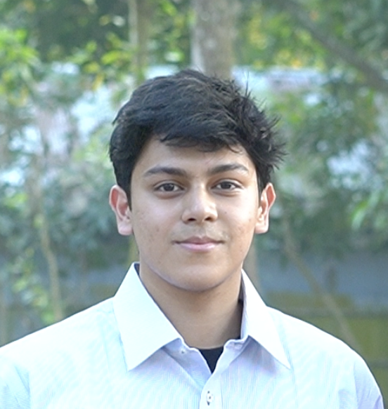
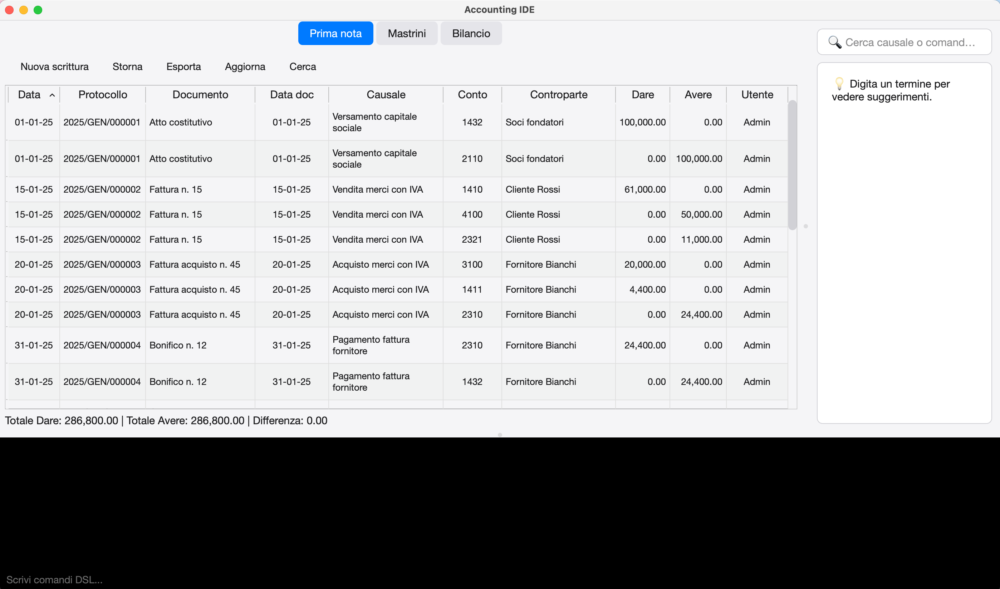

2026 —
Laurea Magistrale in Finanza (LM-16) · Università di Trento
Ammissione confermata nella prima sessione.
Laureando in Gestione Aziendale, Università di Trento — in procinto di iniziare la Laurea Magistrale in Finanza (LM-16). Appassionato di dati, logica e strategia aziendale.

Un percorso costruito con curiosità più che con linearità: dagli studi tecnici in elettrotecnica e ingegneria industriale, alla scelta consapevole di Gestione Aziendale, fino alla Magistrale in Finanza.
Il filo conduttore è l'interesse per unire rigore analitico e logica finanziaria — messo in pratica anche nello sviluppo di strumenti software per la gestione contabile e fintech.
Laurea Magistrale in Finanza (LM-16) · Università di Trento
Ammissione confermata nella prima sessione.
Laurea Triennale in Gestione Aziendale (L-18) · Università di Trento
Laureando, esami conclusi e voto atteso 100/110.
Ingegneria Industriale (L-9R) · Università di Trento
Percorso di studi che ha rafforzato l'approccio analitico, prima di orientarmi consapevolmente verso la gestione d'impresa.
Diploma di Tecnico Industriale · Istituto G. Floriani
Indirizzo Perito elettrotecnico.
Tirocinio — Web Developer · TESIA
Collaborazione con team di sviluppo nella gestione di progetti web per aziende clienti.
Tirocinio — Tecnico Elettronico · TESIA
Manutenzione e verifica di sistemi elettronici, con approccio sistematico all'identificazione e risoluzione di anomalie tecniche.
Tesi di laurea triennale.
| Relatore | Prof. Diego Ponte |
| Materia | Sistemi informativi aziendali |
| Status | In corso... |
| Link | [LINK] |
Progettazione e sviluppo di un'applicazione ERP full cloud (ERPCloud) rilasciata in ambiente di produzione su Vercel. Il progetto nasce con l'obiettivo di centralizzare le operazioni di business (come la gestione dei contatti, la fatturazione e la logistica aziendale) all'interno di un'unica interfaccia web reattiva e accessibile. Sviluppato seguendo logiche di scalabilità cloud-based, il software rappresenta un prototipo funzionante (MVP) pensato per la micro e piccola impresa, strutturato per integrare moduli gestionali interconnessi.
| Ruolo | Developer |
| Stack tecnologico | TypeScript |
| Funzionalità | Funzionalità modulari essenziali per ogni tipo di pmi |
| Repository | erpcloud-jade.vercel.app/ |


Molteplici versioni:
Prima versione, build di frontend&backend con solo python. Si tratta di un software contabile con input DSL/terminal. Motore contabile separato dal layer frontale, con zero rischio di sicurezza e modificabilità dati. Presenza di audit trail con hash per ciascun operazione, immutabilità di dati storici.
Seconda versione, architettura in Rust con uso di PostGreSQL. Capacità fully-offline o enterprise server senza ambiguity di multi commitment contemporanei. Data la complessità del progetto, questo è ancora in corso.
| Ruolo | Developer |
| Stack tecnologico | Python - SQL - |
| Funzionalità | [FUNZIONALITÀ] |
| Repository | [LINK] |

Sviluppo di una soluzione in Python per automatizzare il flusso di pulizia e standardizzazione dei dati estratti dalla piattaforma AIDA. Lo script trasforma dati grezzi multi-impresa in report .xlsx strutturati e puliti secondo specifiche aziendali, riducendo drasticamente i tempi di elaborazione manuale
| Ruolo | Developer |
| Stack tecnologico | Python |
| Funzionalità | Data: ingestion, cleaning, stadardization & export. |
| Repository | github |
Sviluppo di un motore di riclassificazione e analisi finanziaria automatizzata in Python per l'elaborazione massiva (batch processing) di database aziendali. Lo script acquisisce dati patrimoniali e anagrafici pre-standardizzati e genera in autonomia report individuali in formato Excel per molteplici imprese simultaneamente. Il sistema organizza i dati storici su base pluriennale e automatizza il calcolo dei tre pilastri contabili fondamentali insieme ai principali indicatori di performance, azzerando i tempi di calcolo manuale e standardizzando l'output per l'analisi societaria.
| Ruolo | Developer |
| Stack tecnologico | Python |
| Funzionalità | Automated data mapping, batch processing, calcolatore dati economici e finanziari organizzati. |
| Repository | github |
[DESCRIZIONE — sostituisci o rimuovi questo blocco se non applicabile]
| Ruolo | Team Leader |
| Stack tecnologico | [STACK] |
| Funzionalità | [FUNZIONALITÀ] |
| Repository | github |